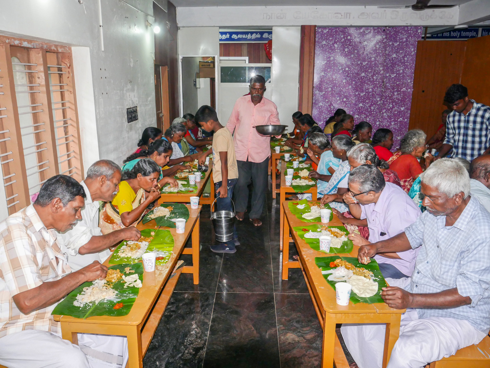

Where Every Senior Citizen is Valued & Cherished
Messiyah Mission Elders Home is the dedicated eldercare service unit of Messiyah Mission Trust. Its creation addresses the urgent humanitarian reality of aged people suffering from abandonment, loneliness, acute poverty, or debilitating physical decline.
We strive to create an atmosphere that feels not like an institution, but like an extended family where elders receive personalized care, fresh hot food, timely medicines, and a peaceful environment.

Daily balanced, hygienic meals served with love and attention to senior residents.
The Four Pillars of Eldercare
Practical, continuous support ensuring physical health and emotional well-being.
Nutritious Food
Freshly cooked breakfast, lunch, and dinner tailored to geriatric dietary needs, with low-sodium and diabetic considerations.
Medical Health
Periodic vital checks, blood pressure and sugar tracking, prescription drug assistance, and eye and dental care tie-ups.
Safe Shelter
Clean, airy, and peaceful residential arrangements with assisted living support for elders with limited mobility.
Emotional Dignity
Daily conversations, social interaction, festive gatherings, and recreational quietude that dispel isolation.
Who Can Seek Care & Admission?
Messiyah Mission Elders Home welcomes vulnerable senior citizens on an objective, humanitarian basis:
- Destitute Senior Citizens: Elderly men and women with no surviving family or income.
- Vulnerable Widows / Widowers: Aged individuals living in isolation without caregivers.
- Bedridden or Infirm Elders: Those needing supervised basic nourishment and daily assistance.
- Non-Discriminatory Policy: Admission is provided irrespective of caste, creed, or community.
Sponsor an Elder's Meal or Care
You can support our ongoing eldercare expenses—daily provisions, nutritional supplements, and medical care—directly through the official trust bank accounts: